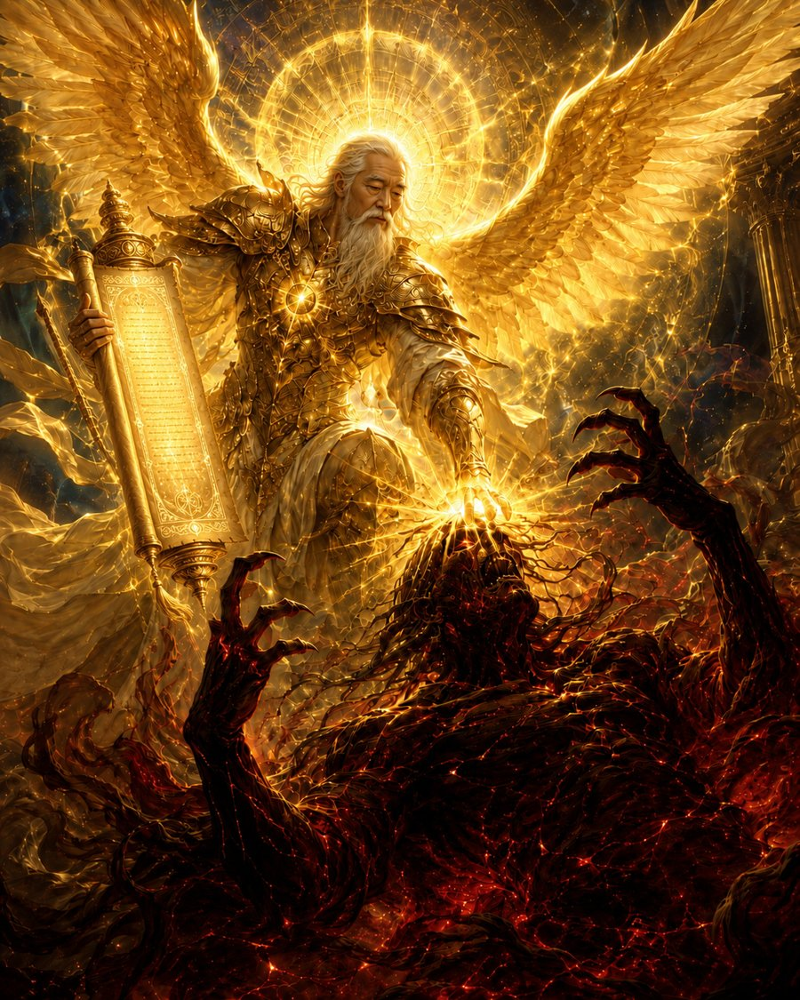
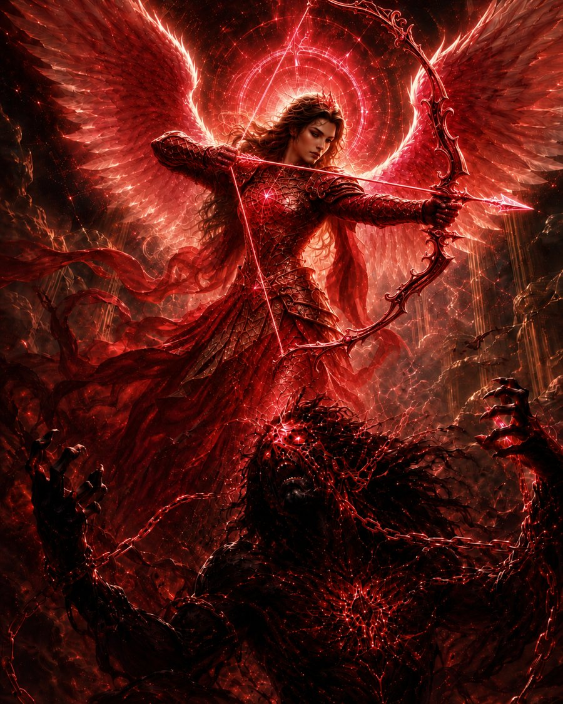
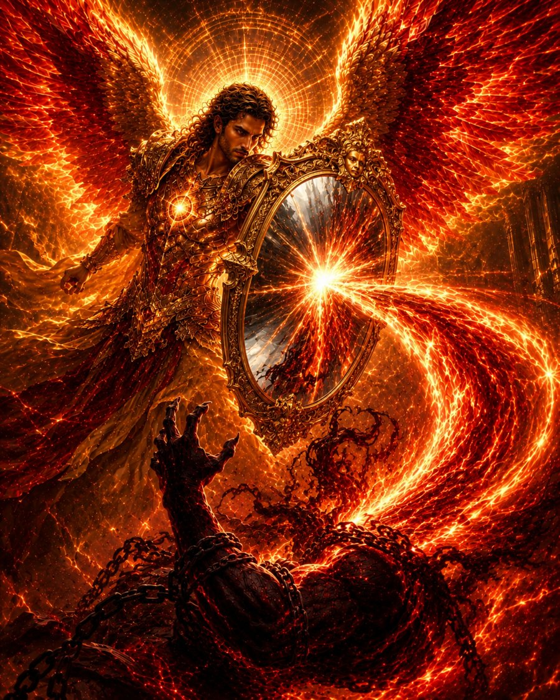
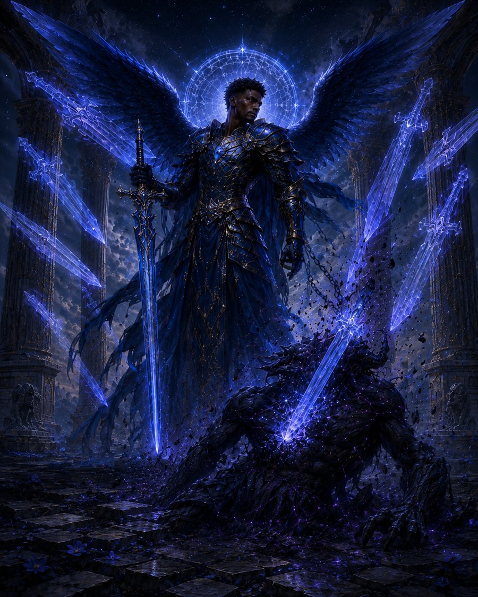

The Way of Virtue
Who are you among the legion of angels?
What world will you create?
“Focus transmits Blessings.”
Wings of Gnosis is a PC game of fallen angels and distorted virtues. The Sha — Life itself, given form — were sent into a human world that was not ready for them. You descend, forget everything you were, and earn your virtues back, one demon at a time.
PC Game · In DevelopmentThe Fall
The Sha are Angels of Life — Attention and Life that takes form. They command the powers of attention and amplification. They grow whatever Willpower commands.
Then Upper Angel Orion sent the Sha into the human world — against the wishes of their commander, Archangel Michael:
“Save the Humans from themselves! They aren’t ready for Sha!”
A divine energy, dispensed to humans before they were ready. Granting all their wishes, good or bad — and causing chaos.
Demons are beings built of many unfulfilled desires and limited attention. When Will’s blessings are blocked, focus scatters, and our innate Angelic qualities become distorted. The humans distorted the virtues — and spawned demons born from those distortions.
The Descent
So you fall. In order to leave your realm, the Akash, to save the humans from their demons, you will have to forget your virtues, lose your abilities, and mingle with them.
Then you regain your virtues as you defeat the demons and restore harmony — for the virtues are the source of your power. Slay the demons. Send the Sha ascending back to Xion, through a golden pillar of light. Restore the balance of Willpower, and cleanse the world.
“Focus transmits Blessings.”
The System
Every virtue is a fundamental quality of the Divine Will. Every distortion is that same quality, blocked. 28 pairs. Four roots. Each virtue is an ability you will use to restore balance — and each distortion is a demon waiting to be faced.
The opening of seeing: awareness flowing from the Self — or scattered into fear of everything that could go wrong at once.
The commitment that gives Life its direction: intention set straight from the Will — or the same force moving blind, in ignorance of where it goes.
The Life Fire itself: attention that transmits blessings when it flows — or burns against the world in resistance when it is blocked.
The Will to live, moving through all things: Will exercised with self-control — or blocked, scattered, and experienced as suffering.
The Archangels
One Arch Angel stands over each root of the Way of Virtue — Awareness over Water, Intent over Earth, Attention over Fire, and Divine Willpower over Air.




The World
Xion is the angelic kingdom within Akasha — the ancient city of the angels, a mountain in the sky, and the source of all angels. At its centre stands the Angeleye, the portal through which angels pass.
The Sha are Angels of Life, the precursors to Creation Angels, and quite larger than them. Attention and Life that takes form, they amplify whatever they touch — and in the human world, they are amplifying distorted Will. They must ascend back to Xion.
Beings built of many unfulfilled desires and limited attention — distorted Willpower, given strength and form. When the Giant Willpower Crystals beneath the world are distorted by the Sha, demons multiply across the surface.
The Conflict
One Angelic tenet governed them all: “Do not take what the Self has given.” Asmodel broke it, and fell to blasphemy.
The Angel of Time, he steals the humans’ technology, infuses it with ancient angel magic — and tries to erase desire itself from existence. Michael cannot save you. He was outsmarted, and trapped. But he has shattered time for you.
The Guardians. They come from sacred grounds, and devised the teachings of the holy kingdom of Self. Keepers of Willpower, they have imbued it into their craft — their weapons carry the blue flame, the angelic energy that can stop all corrupted intent and kill demons. Their angels are taught how to see with attention, rather than the eyes.
They want to erase metaphysical beings altogether. The two Orders can hold a temporary truce to kill demons when the demons get out of hand — but the Midnight Sun will still turn on Creation Angels who come too close.
A human agent of the Order of the Blue Flame, whose sacrifice against Asmodel ignites the Willpower to finish the fight.
Origin
Eons ago, long before space cooled down, there existed the infinite angelic realm on the other side called Xion.
The Self, full of awareness and existing in all its omnipotent power, had a desire to direct its awareness out. So the Self willed the Angeleye into existence — a means to pour its attention into creating Life and Entropy.
The Self willed Life into existence. This Life Fire, teeming with energy and attention, is exhaled to give birth to countless Angels of Life.
The Self willed Entropy into existence, which gives destruction and transformation to all things. It inhales all of creation back into itself, to be born again.
Then the last action the Great Self did was give Life the Will to live. This Will pours through the Angeleye and guides all life, bringing forth Creation Angels with self-control.
As an Angel with newly discovered Self-awareness, the Self has given you the Free Will to create.
CONGRATULATIONS. YOU ARE NOW A CREATION ANGEL.
“Focus transmits Blessings.”
“Gratitude crystallizes Bliss into Willpower.”
Wings of Gnosis is a PC game in development, built on the Way of Virtue. You fall as an Angel, lose your virtues, and earn them back by defeating the demons born from their distortions.
Explore the Way of Virtue